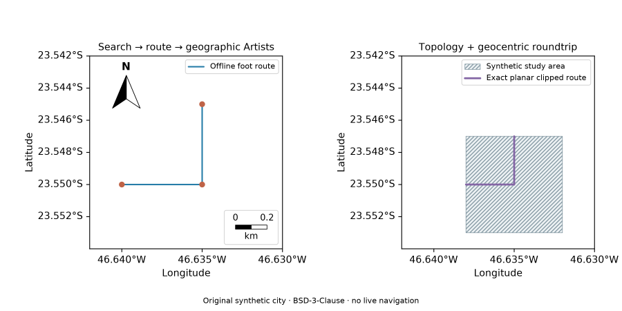
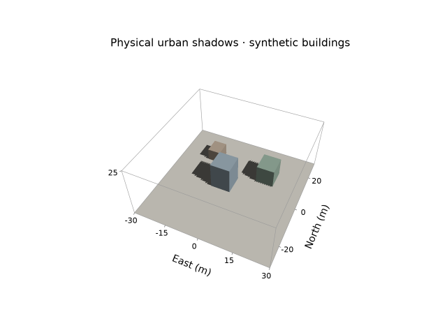
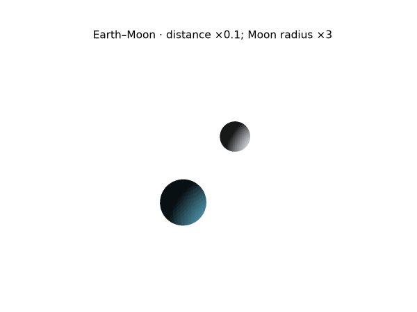
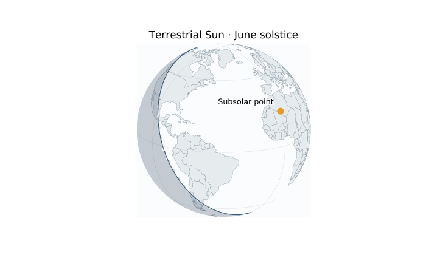
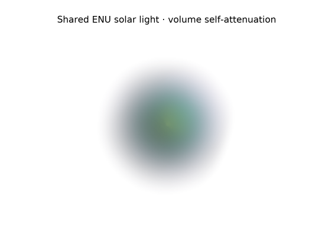

Current scope: four deferred gates and final acceptance/publication pending. GPU/scientific eclipses are experimental; PBF has regional validation only. Latest observed evidence is historical, not final-candidate acceptance.
Unreleased 0.4 integration gallery
These are original Azimlib CPU-rendered development examples. They do not claim release, performance or human platform acceptance. Reproduce PNG/SVG/PDF and optional GPU/native outputs using the integration validator. Source and image hashes identify this local baseline.
Search, route, topology and coordinates

examples/integration_040.py connects a local synthetic geocoder and road graph,
clips a route using own topology and checks the geocentric transform. The city,
route and addresses are synthetic; the example provides no real navigation advice.
Physical local shadows

examples/lighting_maps.py uses original synthetic buildings and ground in a
shared ENU frame. Shadow detail is limited by declared triangle/disk refinement;
visual edges are not an unrestricted spatial precision guarantee.
Earth–Moon composition

examples/lunar_maps.py separates physical geometry from the stated visual
distance/radius scaling. This is not a precise eclipse or contact prediction.
Terrestrial solar globe

examples/solar_maps.py combines the bounded solar model with orthographic
cartography. Geographic boundaries use bundled public-domain Natural Earth data.
Lit volume

examples/lighting_maps.py produces a synthetic bounded volume with self-attenuation.
There is no full mesh-to-volume shadow transport. SVG embeds this raster layer;
PDF/PNG and GPU capabilities follow the volume contract.
Original compositions/code: © Kernerian, BSD-3-Clause. Natural Earth and bundled DejaVu retain their own terms in third-party notices. No third-party reference images, raw ephemerides or unrelated desktop captures are included. For broader capabilities, follow the coverage matrix and each subsystem's reproducible examples.